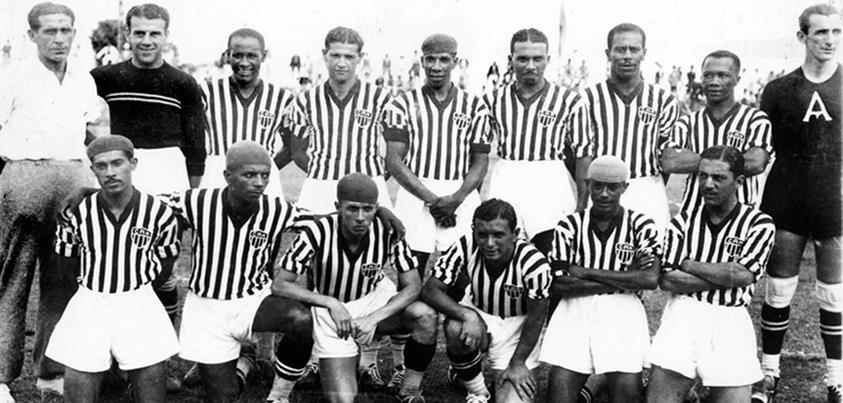

Campeonato Brasileiro de Futebol
O Campeonato Brasileiro de Futebol, também conhecido como Campeonato Brasileiro Série A ou Brasileirão, é a liga brasileira de futebol profissional entre clubes do Brasil, sendo a principal competição futebolística no país. Possui cinco das sete vagas reservadas à Confederação Brasileira de Futebol (CBF) para a Copa Libertadores da América (as outras são do campeão e vice-campeão da Copa do Brasil), além de seis vagas para a Copa Sul-Americana. O campeão disputa a Supercopa Rei no ano seguinte.
Ao contrário do que ocorreu em outros países da América do Sul, houve muitos desafios para que o futebol no Brasil tivesse um sistema de disputa em nível federal. Além da grande dimensão geográfica do país, contribuíram para essa situação a origem e a consolidação do futebol no país a partir dos grandes centros urbanos, algo que fortaleceu uma organização por federações estaduais; as intensas rivalidades pelo poder entre dirigentes paulistas e cariocas, os maiores centros futebolísticos do Brasil; e a própria postura da Confederação Brasileira de Desportos (CBD, precursora da atual Confederação Brasileira de Futebol), a então entidade responsável pelo futebol nacional e que tinha mais interesse em arrecadar com o modelo de um Campeonato Brasileiro entre Seleções Estaduais, originalmente a nomenclatura "Campeonato Brasileiro de Futebol" pertencia a essa disputa, jogada de forma descontínua entre 1922 e 1962, além de uma edição em 1987. Em 1937, surge a primeira disputa nacional de clubes profissionais, o Torneio dos Campeões da FBF (liga de dissidentes e defensora da profissionalização), reconhecido pela CBF, em 2023, como Campeonato Brasileiro. Antes, houve o Campeonato Brasileiro de Clubes Campeões, triangular da CBD jogado em 1920, em pleno amadorismo. Apenas em 1959, como estabelecido em 1955, a CBD cria um torneio nacional regular de clubes profissionais, a Taça Brasil. Em 1967, o Torneio Rio-São Paulo foi expandido para incluir equipes de outros estados, ficando conhecido como Torneio Roberto Gomes Pedrosa, e passando a ser considerado uma competição nacional. Em 1971, a CBD iniciou um novo torneio nacional, o Campeonato Nacional de Clubes, torneio este, que foi considerado, entre 1976 e 2010, pela entidade máxima do futebol brasileiro como sendo a primeira edição do Campeonato Brasileiro. Em seus boletins oficiais entre 1971 e 1975, a CBD colocava as edições do Torneio Roberto Gomes Pedrosa/Taça de Prata em igualdade de condições com as edições posteriores do Campeonato Brasileiro, apenas mantendo os nomes próprios, excluindo esta informação a partir do boletim de 1976. O primeiro Campeonato Brasileiro oficialmente com esse nome foi realizado em 1989. Em dezembro de 2010, a CBF unificou a Taça Brasil (1959 a 1968) e o Torneio Roberto Gomes Pedrosa/Taça de Prata (1967 a 1970) aos títulos a partir de 1971.
História
Antecedentes e primeira edição: o Torneio dos Campeões da FBF (1937)
A maneira como o futebol consolidou-se no Brasil criou várias dificuldades para se estabelecer um sistema de disputa que ultrapassasse as fronteiras estaduais. Ainda que já se praticasse o esporte em território brasileiro desde o final do século XIX, bem como houvesse clubes disputando campeonatos locais organizados por ligas e associações (ambas embriões das atuais federações), não havia nacionalmente uma instituição responsável pela centralização e regulamentação do futebol no país até meados da década de 1910. Nesse sentido, as primeiras entidades surgidas para tentar organizar o futebol nacional foram a Federação Brasileira de Sports (FBS) e a Federação Brasileira de Football (FBF). Embora ambas rivalizassem e tivessem buscado o reconhecimento da Federação Internacional de Futebol (FIFA), ambas acabaram dissolvidas em prol da criação da Confederação Brasileira de Desportos (CBD), cujo corpo funcional seria posteriormente composto por assembleia geral das federações associadas.
Finalmente, em 1937, em vez de organizar o que seria seu quarto Campeonato Brasileiro de Seleções Estaduais, a FBF, pressionada financeiramente, preferiu reunir os clubes campeões estaduais de 1936 em suas ligas filiadas. Assim, disputou-se o Torneio dos Campeões de 1937, primeiro certame nacional entre clubes profissionais do Brasil. Foi vencido pelo Atlético-MG, que tornou-se o primeiro campeão brasileiro.

Reformulações: o Campeonato Nacional de Clubes e a Copa Brasil (1971–1979)
O primeiro campeão da nova competição foi o Atlético Mineiro. A Taça Brasil tinha acabado em 1968, o Robertão que desde sua segunda edição adotava o nome oficial de Taça de Prata, englobava apenas times dos estados do Rio de Janeiro, São Paulo, Minas Gerais, Rio Grande do Sul, Bahia, Paraná e Pernambuco. O campeonato tinha, a partir desse ano, primeira e segunda divisões que contava com participantes de vários estados brasileiros,[carece de fontes] sem promoção e rebaixamento por critérios técnicos — no entanto, acabou havendo promoção: foi o vice-campeão da segunda divisão, o Remo, e não o campeão Villa Nova, que ficou com a vaga para disputar o Campeonato Nacional de Clubes de 1972 —, o que só aconteceria a partir de 1988. Na primeira divisão, a única inclusão de outro estado na disputa foi a do Ceará Sporting Club (Ceará), por ter a maior torcida do Ceará. Nesse primeiro ano não houve grandes mudanças em relação ao Robertão do ano anterior, apenas se deu mais uma vaga para Pernambuco, o vice-campeão, mais uma vaga para Minas Gerais, o terceiro colocado. Nesse primeiro ano, 20 clubes disputaram o Brasileiro, contra 17 do Robertão de 1970, não sofrendo nenhuma mudança drástica em relação à edição anterior. Durante vários anos, os interesses da ARENA, braço político da ditadura militar, nortearam o aumento do número de clubes que participariam da competição.